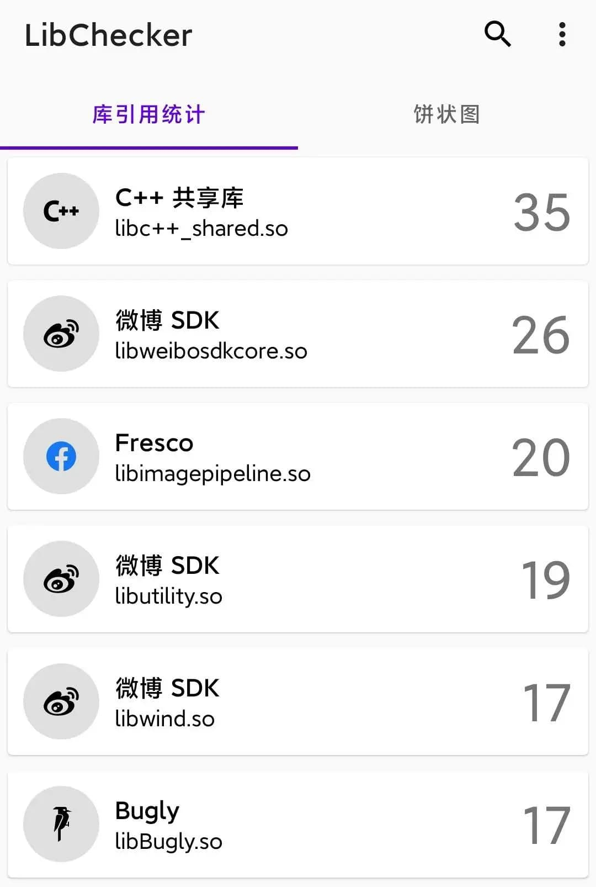

用 LibChecker 三分钟摸清手机里每个 App 的底细
从零上手 LibChecker 的实战教程，覆盖应用架构查看、库引用统计、组件分析三大核心玩法，附带新手最容易踩的三个坑和解法。
读完这篇教程，你能独立完成：查手机里哪些 App 是 32/64 位、统计设备里三方 SDK 的流行度、在 App 更新前后做组件差异对比——全部在本地完成，不上传任何数据。
准备工作
LibChecker 是 Android 专属工具，要求 Android 8.0（API 26）及以上系统。它不依赖任何 Google Play 服务，国产 ROM 直接装就能跑，先去下载一份最新版。安装包从LibChecker官网拿就行，主程序和规则库全部开源，任何人都可以审查代码或贡献规则。
第一步：认识主界面的三个 Tab
打开 LibChecker，主页底部有三个 Tab——这是你之后 90% 时间都在切换的地方：
- 应用列表（默认）：设备上所有安装的 App，点进去看架构、权限、组件详情
- 库引用统计：按 SDK 引用次数排序的排行榜，一眼看全机最流行的三方库
- 快照：给 App 拍个照，下次更新后做差异对比

别急着点任何一个应用，先在应用列表的高级筛选里把 32 位和 64 位分出来——右上角筛选按钮里勾选 ABI 架构，你会发现有些老应用只支持 armeabi-v7a（32 位），在 64 位设备上性能受限。这是 LibChecker 最初的设计初衷，也是现在最常用的功能之一。
第二步：查看单个应用的完整架构
在应用列表里随机点开一个 App，进入详情页。这里的信息量比较大，我按「从上到下」的顺序带你走一遍：
顶部卡片：显示应用名、包名、版本号、安装时间，最重要的是 ABI 架构标签——写着 arm64-v8a 就是纯 64 位，armeabi-v7a 就是纯 32 位，两者都有则是兼容模式。
基础信息区：目标 SDK 版本、最低支持版本、签名方案（v1/v2/v3）、是否 debuggable。如果看到一个正式上架的 App 目标 SDK 还停在 Android 8.0 以下，基本可以判定开发团队没在维护了。
四大组件 Tab：Activity、Service、BroadcastReceiver、ContentProvider 各占一个 Tab。每个组件都展开能看到详细配置——exported 属性、intent filter、权限保护。重点盯 ContentProvider：如果一个 Provider 是 exported=true 且没有 readPermission/writePermission 保护，意味着任何 App 都能读写它的数据，这在安全审计里是高风险项。

库详情 Tab：这是 LibChecker 最有价值的部分。它会扫描 App 的 .so 文件和 DEX，把网上已知的 SDK 库标记出来。点进任意一个标记过的库，能看到该 SDK 的简介、版本号、所在路径。作者维护了一份规则库，覆盖了市面上绝大多数主流 SDK——从微信支付、支付宝到各种埋点统计 SDK，都能识别，标记逻辑和规则更新在LibChecker文档里有详细说明。
第三步：用引用统计看全机 SDK 分布
切换到「库引用统计」Tab，你会看到一个按引用次数降序排列的列表——引用次数就是你设备里有多少个 App 包含这个库。
排前列的库通常是最常见的基础 SDK：Glide（图片加载）、OkHttp（网络请求）、Gson（JSON 解析）这些几乎每个 App 都带。排后列的可能是某些垂直领域的小众 SDK，或者某个厂商的专有组件。
右上角有个类型切换按钮，默认只显示原生库（.so 文件）。你可以切到「组件」维度，看哪些 App 注册了某类 Service；切到「权限」维度，快速找出全机申请了 SYSTEM_ALERT_WINDOW（悬浮窗）的应用——这在排查恶意 Overlay 时特别有用。
第四步：拍个快照，下次更新比一比
这是 LibChecker v2.0 之后新增的功能，借鉴了版本控制系统的思路。在应用详情页点「拍快照」，当前 App 的完整组件清单会被保存。等这个 App 下次更新后，回到快照 Tab 点「对比」，就能看到新旧版本之间哪些 Activity 新增了、哪些 Service 被移除了、哪些权限声明变了。
实际场景里特别好用——比如你怀疑某个 App 更新后偷偷加了追踪 SDK，拍快照对比一下，新增的 .so 文件和组件一目了然。
新手最容易踩的三个坑
坑一：标记库不全，以为 LibChecker 失效了。 规则库是社区维护的，新增的小厂 SDK 或自研库可能还没收录。这不是 bug——没标记的库会以灰色显示，你可以在规则库仓库提 issue 补充。
坑二：ContentProvider 全是 exported=false，找不到可分析的。 这很正常。现在主流 App 出于安全考虑基本把 Provider 都设为不导出。但如果一个你信任的 App 突然出现 exported=true 的 Provider，就要留意了——可能是某个 SDK 引入的，也可能是被攻击注入的。
坑三：快照对比没反应。 快照是基于「同一应用的不同版本」来对比的，如果你卸载重装了（包名不变但签名变了），或者清除了应用数据，快照会提示不匹配。解决方法很简单——卸载前拍一次，装新版本后直接对比，中间别碰应用数据。
进阶方向
等你把上面四步跑熟，可以试试 Overlay 悬浮窗检测——LibChecker v2.5 新增了专门的详情页，从应用列表的高级筛选里找出所有声明了 TYPE_APPLICATION_OVERLAY 的应用，逐个排查有没有滥用。或者深入 ContentProvider 的权限详情页，看 permission 和 provider 的关系链，这在逆向工程里是很有用的切入点。
这套工具从最初的 32/64 位检测器演化到今天的全功能架构查看器，始终保持着开源透明和本地处理的设计原则——所有分析在你手机上完成，不上传任何用户数据。规则库由社区持续维护，遇到未标记的库可以随时贡献规则进去。开源项目的代码和规则库在多个平台都能找到方便贡献者协作，GitHub 主仓持续更新，Gitee 镜像和 GitCode 备份同步分发，国内访问哪个快用哪个。